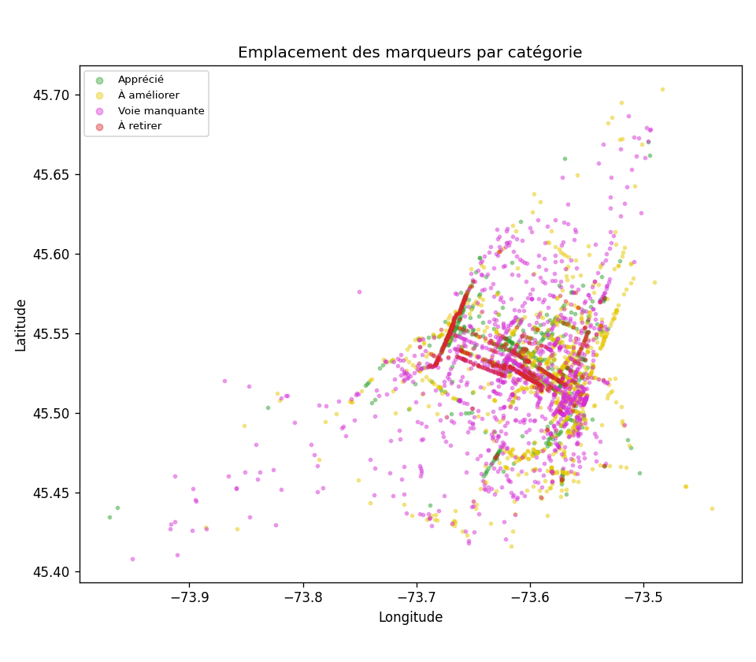
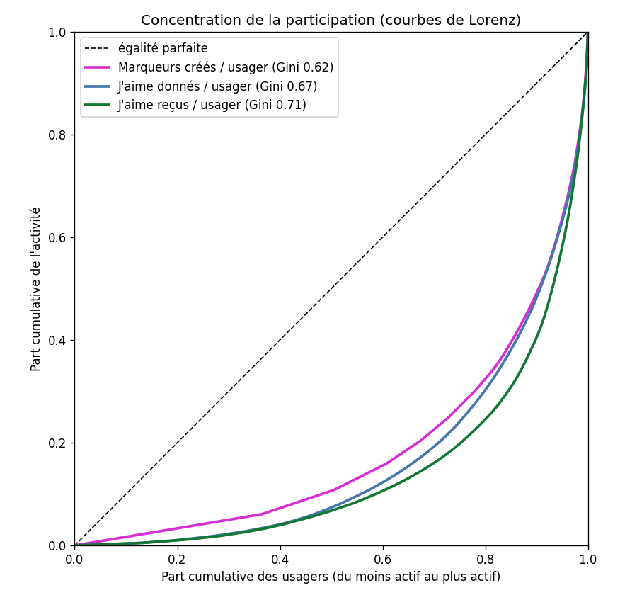
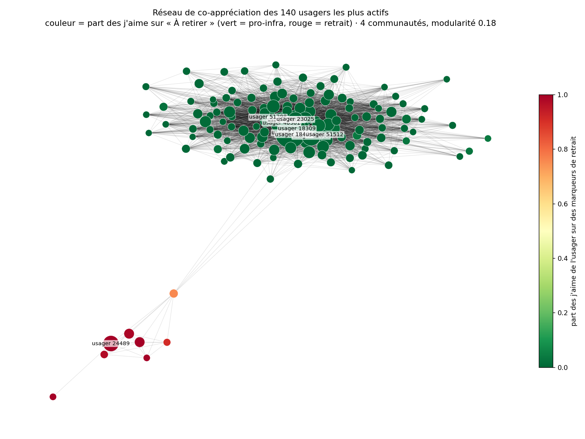

Analyse des marqueurs de carte déposés par participants. La plupart réclament des infrastructures cyclables plus nombreuses et de meilleure qualité; les demandes de retrait proviennent d'une poignée d'usagers très actifs et n'ont récolté presque aucun appui.
En comptant une personne, un vote, la part des demandes de retrait tombe de 11,8 % à 7,6 %. Même sur Henri-Bourassa — le corridor le plus visé par le retrait (108 marqueurs « À retirer ») — seulement 19 personnes sont contre contre 100 pour. L'opposition est réelle mais étroite et concentrée.
Près de 7 marqueurs sur 10 (68,6 %) signalent une lacune ou un problème (voie manquante + à améliorer). À peine ~1 sur 5 célèbre l'existant, et les demandes de retrait forment le plus petit groupe.
Les marqueurs « À retirer » reçoivent de loin le moins de j'aime — le public ne se rallie pas derrière eux.
j'aime au total · moyenne 3,84 · 78 % des marqueurs ont au moins un j'aime. La « voie manquante » récolte le plus de j'aime.
| J'aime | Catégorie | Commentaire |
|---|---|---|
| 40 | Voie manquante | Dangereux entre la rue du Quai de l'horloge et Saint-Laurent. Nous sommes jetes directement vers les piétons et touristes. |
| 39 | Voie manquante | Axe dangereux |
| 37 | Voie manquante | L'avenue du Parc est très dangereuse pour les cyclistes et les piétons, cela ressemble e un autoroute en pleine ville. Il faut un lien cyclable protege unidirec |
| 35 | Voie manquante | Area needs a dedicated bike path to connect |
| 32 | Voie manquante | Desperate need for a dedicated cycle path in this highly used corridor. There's so much space. Priority for pedestrians and cyclists alike. |
| 31 | Voie manquante | Il faut ajouter un axe separe physiquement |
| 31 | Apprécié | La piste cyclable en site propre est nettement mieux que l'ancienne configuration. Il faut absolument completer le projet tel qu'annonce au depart. |
| 31 | À améliorer | Tellement de vélos sur la piste sur Rachel, il faudrait 2 pistes unidirectionelles. |
| 30 | Voie manquante | Piste cyclable manquante sur l'avenue du Parc. Incroyablement dangereux de rouler ici. |
| 30 | Apprécié | Lien cyclable essentiel pour la securites des mouvements est-ouest dans l'axe. Les autres options ne sont pas securitaires ou lineaires. |
| 29 | Apprécié | La piste cyclable sur la rue de Verdun est une amélioration notable pour la mobilité de touetees dans l'arrondissement de Verdun. |
| 29 | Voie manquante | Manque de continuité de la piste |
Compter chaque marqueur également surévalue les usagers prolifiques. Vue : Comptes bruts.
Glissez le curseur : part des marqueurs pro vs retrait provenant des usagers les plus actifs. Le retrait est bien plus concentré.
Les demandes de retrait sont très concentrées : un seul usager en a placé 116 (29,6 % de la catégorie), et le top 3 représente .
Aperçu géographique par catégorie. La carte interactive complète (groupes de marqueurs, infobulles, couches activables, chaleur des j'aime) s'ouvre dans un nouvel onglet — elle est volontairement séparée car elle charge 3 333 marqueurs.

176 cellules contiennent ≥5 marqueurs (1 580 marqueurs). Deux pôles dominent : le Vieux-Port / centre-ville est et l'avenue du Parc, tous deux signalés manquants et dangereux. Dans les 7 cellules à dominante de retrait, les marqueurs « Apprécié » récoltent 395 j'aime contre 183 pour le retrait (2,2×).
| Marq. | J'aime | Catégorie dominante | Localisation | Commentaire représentatif |
|---|---|---|---|---|
| 24 | 263 | Voie manquante | 45.5074, -73.5518 | Dangereux entre la rue du Quai de l'horloge et Saint-Laurent. Nous sommes jetes directement vers les piétons et touristes. |
| 34 | 214 | À retirer | 45.5531, -73.6693 | Une superbe piste qui permet de traverser rapidement le quartier. Cela sera encore mieux quand elle sera completee |
| 17 | 173 | Voie manquante | 45.5096, -73.5507 | Area needs a dedicated bike path to connect |
| 21 | 144 | À améliorer | 45.5097, -73.5667 | Une des intersections les plus dangereuses pour les cyclistes e montréal (arret de bus dans la bande cyclable, denivele, aucune separation entre les vélos et le |
| 26 | 142 | À retirer | 45.5477, -73.6726 | Piste cyclable importante et structurant e ne pas elever |
| 27 | 139 | Voie manquante | 45.5230, -73.6039 | Piste cyclable manquante sur l'avenue du Parc. Incroyablement dangereux de rouler ici. |
| 21 | 129 | Voie manquante | 45.5212, -73.6000 | Une piste unidirectionnel est une necessite et est très importante pour la sécurité de tous |
| 19 | 128 | Apprécié | 45.5451, -73.6733 | Bravo pour cet aménagement. Adoucit la circulation pour les deux écoles primaires e proximite. |
| 11 | 112 | À améliorer | 45.5290, -73.5707 | Tellement de vélos sur la piste sur Rachel, il faudrait 2 pistes unidirectionelles. |
| 14 | 110 | Voie manquante | 45.4992, -73.5707 | REV Peel e completer au moins jusqu'e Maisonneuve. |
| 14 | 109 | Voie manquante | 45.5184, -73.5929 | L'avenue du Parc est très dangereuse pour les cyclistes et les piétons, cela ressemble e un autoroute en pleine ville. Il faut un lien cyclable protege unidirec |
| 21 | 107 | À retirer | 45.5551, -73.6682 | Besoin de plus lien comme celui ci ! |
Chaque barre = personnes distinctes ayant participé (créé ou aimé un marqueur), scindées par position. Chaque corridor est massivement pour.
| Corridor | Pers. | Pour | Mixte | Contre | Marq. | J'aime |
|---|---|---|---|---|---|---|
| Saint-Denis | 173 | 168 | 1 | 4 | 64 | 459 |
| Avenue du Parc | 156 | 144 | 3 | 9 | 112 | 479 |
| Saint-Laurent (boul.) | 149 | 142 | 0 | 7 | 102 | 311 |
| De Maisonneuve | 146 | 141 | 2 | 3 | 70 | 395 |
| Rachel | 142 | 140 | 0 | 2 | 52 | 323 |
| Henri-Bourassa | 121 | 100 | 2 | 19 | 174 | 649 |
| Christophe-Colomb | 111 | 107 | 0 | 4 | 29 | 189 |
| Saint-Urbain | 107 | 104 | 0 | 3 | 68 | 273 |
| Sherbrooke | 105 | 101 | 2 | 2 | 63 | 223 |
| Berri | 101 | 100 | 0 | 1 | 26 | 218 |
| Rene-Levesque | 83 | 79 | 0 | 4 | 39 | 152 |
| Peel | 81 | 81 | 0 | 0 | 30 | 229 |
| De la Commune | 61 | 61 | 0 | 0 | 13 | 115 |
| Notre-Dame | 56 | 54 | 0 | 2 | 26 | 76 |
| Verdun | 56 | 54 | 0 | 2 | 23 | 100 |
| Papineau | 52 | 52 | 0 | 0 | 15 | 53 |
| Jarry | 47 | 41 | 5 | 1 | 37 | 150 |
| Viau | 41 | 41 | 0 | 0 | 11 | 55 |
| Wellington | 33 | 33 | 0 | 0 | 12 | 66 |
| Lasalle | 31 | 29 | 0 | 2 | 12 | 54 |
| Cote-des-Neiges | 27 | 27 | 0 | 0 | 9 | 32 |
| De Lorimier | 20 | 19 | 0 | 1 | 8 | 15 |
| Pie-IX | 13 | 13 | 0 | 0 | 5 | 10 |
| Cote-Sainte-Catherine | 7 | 7 | 0 | 0 | 3 | 8 |
La participation est très inégale : Gini de 0,62 (marqueurs créés), 0,67 (j'aime donnés) et 0,71 (j'aime reçus). Le 10 % d'usagers les plus actifs représente ~51–60 % de toute l'activité — ce qui motive la pondération « une personne, un vote ».

Réseau de co-appréciation des 140 usagers les plus actifs (deux usagers sont reliés s'ils ont aimé les mêmes marqueurs). On distingue une grande masse pro-infrastructure (3 communautés, 0 % de j'aime de retrait) et un petit groupe détaché de 8 usagers à 95 % de j'aime de retrait — confirmation visuelle d'une opposition concentrée et distincte.

| Apprécié | lien, apprecie, rev, pratique, securitaire, belle, bonne, permet |
| À améliorer | intersection, voitures, dangereuse, dangereux, bande, cyclistes, velo, velos |
| Voie manquante | rev, lien, parc, manque, saint, nord, dangereux, velo |
| À retirer | henri bourassa, parc, bourassa, henri, svp, inutile, traffic, arterielle |
| Taille | Termes | Exemple |
|---|---|---|
| 2705 | lien, parc, dangereux, velo, cyclistes, intersection | « Dangereux entre la rue du Quai de l'horloge et Saint-Laurent. Nous sommes jetes directement vers les piétons et touristes. » |
| 265 | rev, saint, jarry, rev jarry, rev sherbrooke, sherbrooke | « Depuis que le REV est present sur Saint-Denis, la vitalite commerciale explose. L'occupation des locaux est enfin e un niveau eleve, apres u » |
| 144 | nord, sud, nord sud, lien, lien nord, manque | « Lien cyclable sur Saint-Urbain qui ne retire aucune capacite routiere (en bord de rue e la place du stationnement), axe deje present mais sé » |
| 111 | bike, path, bike path, lane, bike lane, street | « Area needs a dedicated bike path to connect » |
| 69 | tout henri, traffic arrete, metres feux, inutile tout, feux rouges, c'est traffic | « Inutile sur tout Henri Bourassa ! C'est dans le Traffic et on arrête e tous les 100 mètres pour des feux rouges. » |
| 39 | arterielle, reseau arterielle, reseau, nuis reseau, nuis, nuit reseau | « Nuis aux réseau artérielle » |
Les usagers sont désignés par leur identifiant numérique seulement. Top 10 par catégorie; listes complètes (top 20 créateurs, top 50 donneurs) dans les CSV du dépôt.
| # | 🟢 Apprécié | 🟡 À améliorer | 🟣 Voie manquante | 🔴 À retirer |
|---|---|---|---|---|
| 1 | usager 50161 — 30 | usager 48301 — 48 | usager 50046 — 97 | usager 23634 — 116 |
| 2 | usager 43376 — 28 | usager 48647 — 26 | usager 48301 — 37 | usager 51264 — 69 |
| 3 | usager 48033 — 19 | usager 48333 — 19 | usager 19647 — 30 | usager 51626 — 66 |
| 4 | usager 51315 — 19 | usager 49215 — 19 | usager 19019 — 27 | usager 49604 — 19 |
| 5 | usager 49846 — 16 | usager 47608 — 16 | usager 51702 — 27 | usager 51588 — 12 |
| 6 | usager 18293 — 13 | usager 48137 — 16 | usager 48136 — 22 | usager 51603 — 11 |
| 7 | usager 50569 — 12 | usager 19019 — 15 | usager 43693 — 20 | usager 24489 — 10 |
| 8 | usager 19009 — 11 | usager 43376 — 14 | usager 43376 — 18 | usager 48993 — 10 |
| 9 | usager 23610 — 11 | usager 48739 — 14 | usager 48251 — 16 | usager 49770 — 10 |
| 10 | usager 43693 — 11 | usager 18415 — 13 | usager 51577 — 16 | usager 23994 — 7 |
| # | 🟢 Apprécié | 🟡 À améliorer | 🟣 Voie manquante | 🔴 À retirer |
|---|---|---|---|---|
| 1 | usager 19019 — 146 | usager 19019 — 225 | usager 19019 — 427 | usager 24489 — 202 |
| 2 | usager 50569 — 144 | usager 48301 — 174 | usager 48301 — 192 | usager 51675 — 75 |
| 3 | usager 18309 — 108 | usager 51398 — 70 | usager 18475 — 172 | usager 23634 — 74 |
| 4 | usager 19009 — 93 | usager 51083 — 68 | usager 50569 — 134 | usager 51308 — 37 |
| 5 | usager 51506 — 89 | usager 48140 — 62 | usager 51512 — 119 | usager 50161 — 37 |
| 6 | usager 51512 — 88 | usager 51375 — 62 | usager 18309 — 110 | usager 51493 — 29 |
| 7 | usager 51631 — 63 | usager 51656 — 54 | usager 51398 — 102 | usager 51588 — 27 |
| 8 | usager 49044 — 62 | usager 48647 — 49 | usager 51083 — 95 | usager 23962 — 26 |
| 9 | usager 23025 — 58 | usager 49394 — 48 | usager 48140 — 79 | usager 51603 — 13 |
| 10 | usager 51083 — 58 | usager 49600 — 47 | usager 23025 — 78 | usager 23994 — 12 |
user_id (un pseudonyme). Le fichier source brut (noms, courriels, réponses
complètes) n'est pas versionné.